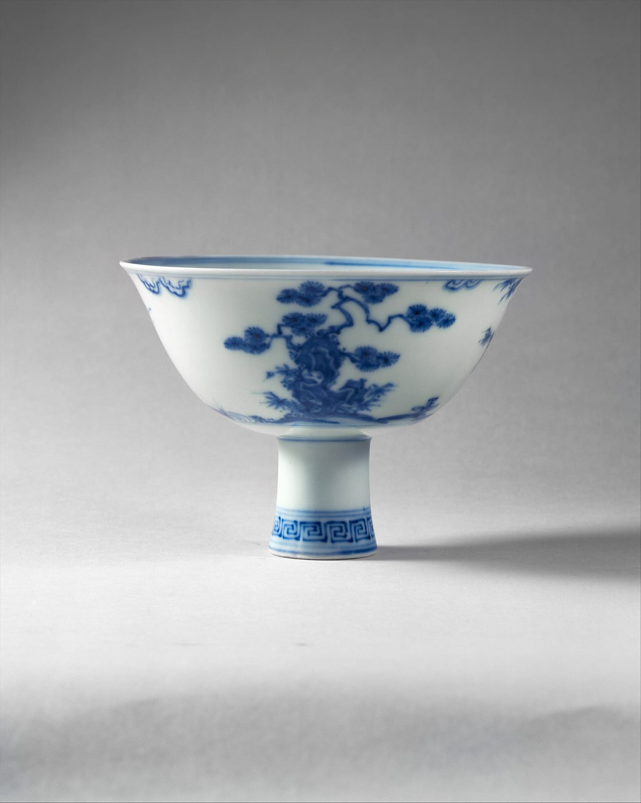

CHINA
中方主任
中国人民大学
负责中心整体战略规划、中方研究团队建设与国内学术资源统筹。
中国人民大学 × 科英布拉大学
Centro de Cooperação China-Portugal para o Intercâmbio e Aprendizagem Mútua entre Civilizações
探索中心01 / 中心简介
2026 年 4 月 8 日，中国人民大学与葡萄牙科英布拉大学在科英布拉共同成立中葡文明交流互鉴合作研究中心，中心依托中国人民大学艺术学院建设。
中心致力于建成中葡文明交流互鉴高水平研究平台、服务国家对葡语国家合作与“一带一路”建设的重要智库平台，以及“北京—澳门—科英布拉”三方高端人文交流平台和中葡青年人才培养基地。
02 / 中心主任
CHINA
中国人民大学
负责中心整体战略规划、中方研究团队建设与国内学术资源统筹。
PORTUGAL
科英布拉大学
负责葡方学术网络、欧洲及葡语国家合作事务与联合研究推进。
03 / 研究团队与项目
Digital Humanities & Arts in Lusophone Countries
以数字技术整理与阐释中葡艺术遗产，推动影像、视觉艺术与设计领域的联合研究与创作。
Blue Economy & Maritime Cooperation
立足海洋文明的共同经验，研究海洋治理、港口合作与可持续发展的中葡路径。
Foreign-related Rule of Law & Regional Governance
聚焦中国与葡语国家合作中的法治议题，服务区域治理与国际交流机制建设。

Cultural Heritage Conservation
围绕外销瓷、瓷板画、岩画等跨文明遗产，开展保护、修复与比较研究。
04 / 活动报道
2026.06.09
六位中葡学者围绕影像艺术、岩画、热带主义、文学经典、思想史与语言文化，展开跨文明对话。
中国人民大学艺术学院 530
2026.04.08
中国人民大学与科英布拉大学在科英布拉共同成立中葡文明交流互鉴合作研究中心。
科英布拉 · 葡萄牙
即将推出
中葡文明研究论坛、中葡艺术节、中葡青年领袖营——中心标志性品牌活动陆续启动。
北京 · 澳门 · 科英布拉
05 / 联系我们
BEIJING
中国人民大学艺术学院
北京市海淀区中关村大街 59 号
COIMBRA
科英布拉大学
葡萄牙 · 科英布拉